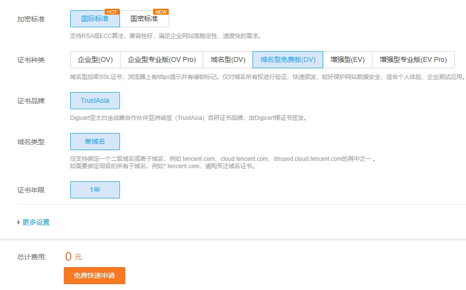

https是什么
- HTTP
HTTP（超文本传输协议）被用于在浏览器和网站服务器之间传递信息，HTTP协议以明文方式发送内容，不提供任何方式的数据加密，如果攻击者截取了浏览器和网站服务器之间的传输报文，就可以直接读懂其中的信息。因此，HTTP协议不适合传输一些敏感信息，比如：信用卡号、密码等支付信息。
- HTTPS
HTTPS(安全套接字层超文本传输协议),是为了解决HTTP协议的这一缺陷，保证数据传输的安全。HTTPS在HTTP的基础上加入了SSL协议，SSL依靠证书来验证服务器的身份，并为浏览器和服务器之间的通信加密。
SSL证书
SSL证书就是遵守SSL协议，由受信任的数字证书颁发机构在验证服务器身份后颁发，具有服务器身份验证和数据传输加密功能。服务器部署了SSL证书后，可以确保用户在浏览器上输入的机密信息在传输链路上是高强度加密传输的，是不可能被非法篡改和窃取的。同时服务器向网站访问者证明了服务器的真实身份，此真实身份是通过第三方权威机构验证的。
那么如何配置https呢？以Nginx服务器为例，可以按照以下步骤配置:
1.准备SSL证书
腾讯云申请免费域名型DV证书
域名型DV证书仅验证域名的所有权，无需通过人工验证申请单位真实身份。因此成本低，从提交购买申请、域名确认、到颁发证书过程用时很快。
按照审核要求设置域名DNS解析或上传服务器验证文件
等待证书审核，一般要十几分钟
审核通过后下载证书，将Nginx文件夹下的crt和key文件上传至服务器任意路径中

Lets encrypt申请免费证ssl书
Let’s encrypt可以申请泛域名证书，并且结合cron计划任务可以实现自动续期
申请方法查看这篇文章
使用acme.sh申请Let’s Encrypt 泛域名证书并自动续期
2.修改nginx配置文件
server { listen 80; listen 443 ssl; server_name www.xxx.com xxx.com *.xxx.com; ssl_certificate xxx.crt;#上传的crt文件路径 ssl_certificate_key xxx.key;#上传的key文件路径 ssl_session_timeout 5m; server_tokens off; fastcgi_param HTTPS on; fastcgi_param HTTP_SCHEME https; ssl_protocols TLSv1 TLSv1.1 TLSv1.2; ssl_ciphers ECDHE-RSA-AES128-GCM-SHA256:HIGH:!aNULL:!MD5:!RC4:!DHE; ssl_prefer_server_ciphers on; index index.html index.htm index.php default.html default.htm default.php; root /home/wwwroot/www.xxx.com; include rewrite/none.conf; #error_page 404 /404.html; # Deny access to PHP files in specific directory #location ~ /(wp-content|uploads|wp-includes|images)/.*\.php$ { deny all; } include enable-php-pathinfo.conf; if ($server_port = 80 ) { return 301 https://$host$request_uri; } location ~ .*\.(gif|jpg|jpeg|png|bmp|swf)$ { expires 30d; } location ~ .*\.(js|css)?$ { expires 12h; } location ~ /.well-known { allow all; } location ~ /\. { deny all; } access_log /home/wwwlogs/xxx.log; }3.保存配置，重启Nginx
nginx -s reload重新访问网站即可出现小锁标志，若显示叹号，说明站内有http资源，需找到并修改为https